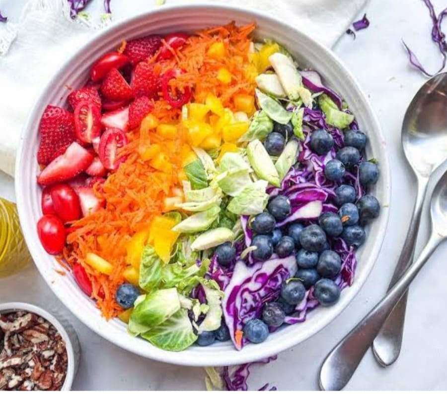

Chickpea Salad
Ingredients:
- Chickpeas
- Grape tomatoes
- English cucumber
- Pickled red onions
- Kalamata olives
- Fresh parsley, dill, and mint
- Lemon dressing
Recipe:
- First, make the dressing. Whisk together olive oil, lemon juice, mustard, garlic, salt, and several grinds of pepper at the bottom of a large bowl.
- Add the chickpeas, olives, pickled onions, and veggies. Toss to coat these hearty ingredients in the dressing.
- Add the fresh herbs and toss again, ensuring the salad ingredients are well combined.
- Finally, season to taste and serve! If making for a special occasion, add extra fresh mint leaves before serving.
Three Beans Salad
Ingredients:
- Fresh green beans, kidney beans, and garbanzo beans
- Extra-virgin olive oil
- Apple cider vinegar
- Garlic
- Dijon mustard
- Honey
- Red onion
- Celery
- Parsley
- Sea salt
Recipe:
- Blanch the green beans. Bring a large pot of salted water to a boil. Drop the beans in and cook for 2 minutes, until crisp-tender and bright green. Transfer to ice water, then drain and dry with a kitchen towel.
- In a large bowl, whisk together the vinegar, garlic, mustard, honey, and salt to make the dressing.
- Add the red onion, kidney beans, chickpeas, blanched green beans, celery, and parsley to the dressing and toss to coat.
- Refrigerate for 1 hour before serving.
Rainbow Salad
Ingredients:
- Tomato
- Carrot
- Yellow bell pepper
- Cucumber
- Blueberries
- Purple cabbage
- Red onions
Recipe:
- Use a lettuce that can hold up to the added fruits and veggies.
- Use a mild dressing that complements the flavors of the vegetables without overpowering them.
- Make sure all ingredients go well together for a harmonious taste.
Avocado & Tomato Salad
Ingredients:
- 2 ripe avocados, diced
- 1 cup cherry tomatoes, halved
- 1/4 red onion, finely chopped
- 2 tbsp olive oil
- 1 tbsp lime juice
- Salt and pepper to taste
Recipe:
- In a large bowl, combine the diced avocados, cherry tomatoes, and red onion.
- Drizzle with olive oil and lime juice, then toss gently.
- Season with salt and pepper to taste.
- Serve immediately or chill in the refrigerator for 10-15 minutes before serving.
Greek Salad
Ingredients:
- 1 cucumber, diced
- 2 medium tomatoes, chopped
- 1/2 red onion, thinly sliced
- 1/2 cup Kalamata olives
- 1/4 cup feta cheese, crumbled
- 1/4 cup extra virgin olive oil
- 1 tbsp red wine vinegar
- 1 tsp dried oregano
- Salt and pepper to taste
Recipe:
- Combine the cucumber, tomatoes, red onion, olives, and feta cheese in a large bowl.
- In a small bowl, whisk together the olive oil, red wine vinegar, oregano, salt, and pepper.
- Pour the dressing over the salad and toss gently to coat.
- Serve immediately or chill for 20 minutes before serving to enhance the flavors.